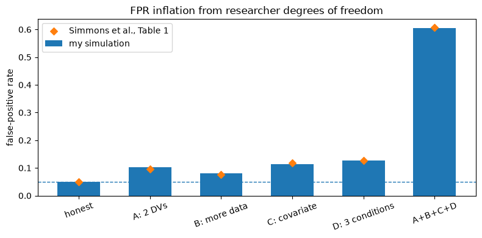

def in_batch_softmax_loss(user_emb, item_emb, log_q, use_correction): """In-batch sampled softmax loss for a two-tower model (Yi 2019 contract). Args: user_emb: (B, d) — user tower outputs. item_emb: (B, d) — their positive items; item j is a negative for every other user. log_q: (B,) — log Q(item_j) in the batch. Returns: scalar — cross-entropy of "which of the B items is this user's positive". """ # YOUR CODE HERE raise NotImplementedError
